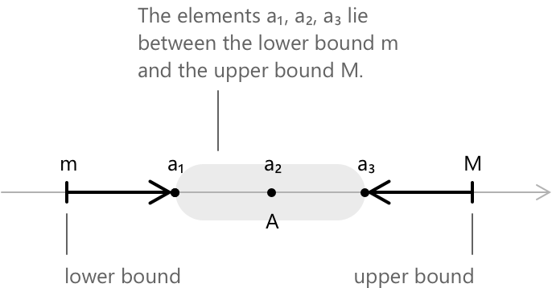
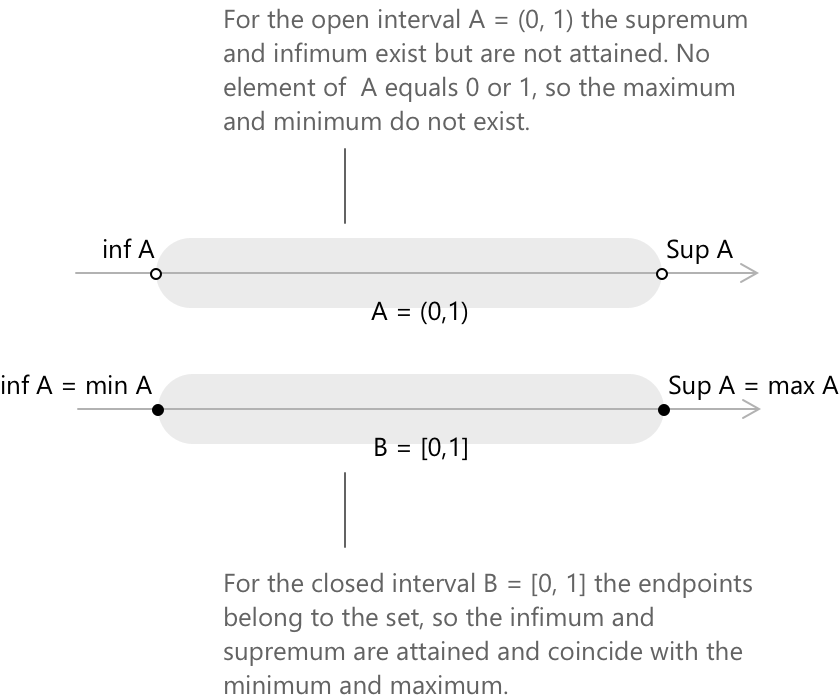

Супремум та інфімум
Аксіома повноти
Хоча дійсні числа часто вводяться через їхні алгебраїчні властивості, істотна відмінність між \( \mathbb{R} \) та \( \mathbb{Q} \) полягає в їхній структурі порядку, зокрема в унікальній властивості цього порядку. Зокрема, кожна непорожня підмножина \( \mathbb{R} \), яка обмежена зверху, має найменшу верхню межу, що належить \( \mathbb{R} \). Ця властивість відома як аксіома повноти та слугує фундаментальною характеристикою дійсної прямої. Поняття супремуму та інфімуму надають практичні засоби застосування цієї аксіоми.
Верхні та нижні межі
Розглянемо непорожню множину \( A \subseteq \mathbb{R} \). Дійсне число \( M \) називається верхньою межею \( A \), якщо:
\[ a \leq M \quad \forall \, a \in A \]
Якщо таке число існує, множина \( A \) обмежена зверху. Аналогічно, дійсне число \( m \) є нижньою межею \( A \), якщо:
\[ a \geq m \quad \forall \, a \in A \]
У цьому випадку \( A \) обмежена знизу. Множина вважається обмеженою, якщо вона обмежена і зверху, і знизу, тобто існує \( K > 0 \), таке що:
\[ |a| \leq K \quad \forall \, a \in A \]
Верхні межі, якщо вони існують, зазвичай не є єдиними. Наприклад, якщо \( M \) є верхньою межею \( A \), то \( M + 1 \) та \( M + 100 \) також є верхніми межами. Те саме симетрично стосується і нижніх меж. Якщо \( m \) є нижньою межею \( A \), то \( m – 1 \) також є такою. Найменша верхня межа називається супремумом, а найбільша нижня межа називається інфімумом.

-
Якщо \( A \) непорожня, але не обмежена зверху, супремум за домовленістю визначається як \(\sup A = +\infty \). Аналогічно,
-
якщо \( A \) не обмежена знизу, інфімум визначається як \( \inf A = -\infty \).
-
Для порожньої множини використовуються домовленіності \( \sup \emptyset = -\infty \) та \( \inf \emptyset = +\infty \).
Супремум
Розглянемо непорожню підмножину \( A \subseteq \mathbb{R} \), яка обмежена зверху. Супремум \( A \), що позначається \( \sup A \), визначається як її найменша верхня межа. Дійсне число \( s \) дорівнює \( \sup A \) тоді і тільки тоді, коли виконуються обидві наступні умови. Перша умова говорить про те, що \( s \) є верхньою межею \( A \): \[ a \leq s \quad \forall \, a \in A \]
Друга умова гарантує, що будь-яке число, строго менше за \( s \), перевичине якесь значення елемента з \( A \): \[ \forall \; \varepsilon > 0 \quad \exists \, a \in A : a > s – \varepsilon \]
Разом ці умови однозначно визначають \( s \). Може бути лише одна найменша верхня межа. Якщо і \( s \), і \( s’ \) задовольняють означення, то маємо
\[ s \leq s’ \, \wedge \, s’ \leq s \, \to s = s’ \]
Еквівалентна характеристика стверджує, що \( s = \sup A \) тоді і тільки тоді, коли \( s \) є верхньою межею \( A \) і існує послідовність \( (a_n) \subseteq A \), така що \( a_n \to s \).
Аксіома повноти гарантує, що \( \sup A \) існує в \( \mathbb{R} \) щоразу, коли \( A \) непорожня та обмежена зверху. Ця властивість не виконується в \( \mathbb{Q} \). Наприклад, множина \( {q \in \mathbb{Q} : q^2 < 2} \) обмежена зверху в \( \mathbb{Q} \), але її найменша верхня межа \( \sqrt{2} \) не є раціональним числом. У цьому випадку супремум існує, але він не належить до простору. Така ситуація не може виникнути в \( \mathbb{R} \).
Інфімум
Розглянемо непорожню підмножину \( A \subseteq \mathbb{R} \), яка обмежена знизу. Інфімум \( A \), що позначається \( \inf A \), визначається як її найбільша нижня межа. Дійсне число \( i \) дорівнює \( \inf A \) тоді і тільки тоді, коли виконуються обидві наступні умови. Перша умова говорить про те, що \( i \) є нижньою межею \( A \):
\[ a \geq i \quad \forall \, a \in A \]
Друга умова гарантує, що будь-яке число, строго більше за \( i \), передує якомусь елементу з \( A \):
\[ \forall \; \varepsilon > 0 \quad \exists \, a \in A : a < i + \varepsilon \]
Разом ці умови однозначно визначають \( i \). Може бути лише одна найбільша нижня межа. Якщо і \( i \), і \( i’ \) задовольняють означення, то маємо
\[ i \geq i’ \, \wedge \, i’ \geq i \, \to i = i’ \]
Еквівалентна характеристика стверджує, що \( i = \inf A \) тоді і тільки тоді, коли \( i \) є нижньою межею \( A \) і існує послідовність \( (a_n) \subseteq A \), така що \( a_n \to i \).
Супремум і максимум, інфімум і мінімум
Зв'язок між супремумом і максимумом, а також між інфімумом і мінімумом часто розуміють неправильно. Максимум множини \( A \) визначається як елемент \( A \), який є більшим або рівним будь-якому іншому елементу. Коли максимум існує, маємо:
\[ \max A = \sup A \]
Супремум не обов'язково належить до множини \( A \). Наприклад, розглянемо \( A = (0, 1) \). Кожен елемент \( A \) строго менший за 1, отже \( \sup A = 1 \). Оскільки \( 1 \notin A \), множина \( A \) не має максимуму. Число 1 слугує найменшою верхньою гранню, але воно не є елементом \( A \). Аналогічно, \( \inf A = 0 \), проте \( 0 \notin A \), тому \( A \) не має мінімуму. Натомість для \( B = [0,1] \) маємо:
\[ \sup B = \max B = 1 \qquad \inf B = \min B = 0 \]
оскільки граничні точки входять до множини.

Загалом, виконується наступне:
\[ \max A \text{ існує} \to \max A = \sup A \] \[ \min A \text{ існує} \to \min A = \inf A \]
Обернене твердження загалом не є вірним. Питання про те, чи досягає функція насправді свого супремуму, є нетривіальним. Теорема Вейєрштрасса дає достатню умову: якщо функція є неперервною на замкненому та обмеженому проміжку, то супремум та інфімум досягаються, і максимум та мінімум існують. Поза цими умовами питання необхідно розглядати для кожного випадку окремо.
Супремум та інфімум функцій
Поняття супремуму та інфімуму природно поширюються на функції. Для функції \( f : D \to \mathbb{R} \) супремум \( f \) на \( D \) визначається як супремум її області значень:
\[ \sup_{x \in D} f(x) = \sup { f(x) : x \in D } \]
Аналогічно, інфімум визначається як:
\[ \inf_{x \in D} f(x) = \inf { f(x) : x \in D } \]
Ці величини представляють найменшу верхню грань і найбільшу нижню грань значень, які набуває \( f \), без вимоги, щоб ці грані були насправді досягнуті.
-
Дійсне число \( s \) дорівнює \( \sup_{x \in D} f(x) \) тоді і тільки тоді, коли \( f(x) \leq s \) для всіх \( x \in D \), і для кожного \( \varepsilon > 0 \) існує \( x \in D \), такий що \( f(x) > s - \varepsilon \).
-
Симетрично, дійсне число \( i \) дорівнює \( \inf_{x \in D} f(x) \) тоді і тільки тоді, коли \( f(x) \geq i \) для всіх \( x \in D \), і для кожного \( \varepsilon > 0 \) існує \( x \in D \), такий що \( f(x) < i + \varepsilon \).
Супремум та інфімум функції не обов'язково досягаються. Наприклад, для \( f(x) = x \), визначеної на відкритому проміжку \( (0, 1) \), \( \sup_{x \in (0,1)} f(x) = 1 \), проте не існує такого \( x \in (0, 1) \), що \( f(x) = 1 \). Якщо супремум досягається в деякій точці \( x_0 \in D \), тобто \( f(x_0) = \sup_{x \in D} f(x) \), він збігається з максимумом \( f \) на \( D \). Такий самий зв'язок існує між інфімумом і мінімумом.
Означення супремуму та інфімуму для функції спонукають розглянути їхню відмінність від значень максимуму та мінімуму. Супремум та інфімум представляють грані, до яких функція може наближатися, але не обов'язково досягати, тоді як максимум і мінімум стосуються значень, яких функція насправді досягає в конкретних точках у \( D \).
Властивість наближення
\( \varepsilon \)-характеристика супремуму та інфімуму є більше ніж просто деталью означення; це форма, в якій ці поняття найчастіше з'являються в доведеннях. Ця характеристика часто представляється як окрема властивість. Якщо \( s = \sup A \), то для кожного \( \varepsilon > 0 \) існує елемент \( a \in A \), такий що
\[ s - \varepsilon < a \leq s \]
Еквівалентно, жодне число, що є строго меншим за \( s \), не слугує верхньою гранню для \( A \). Аналогічне твердження стосується інфімуму: якщо \( i = \inf A \), то для кожного \( \varepsilon > 0 \) існує \( a \in A \), такий що:
\[ i \leq a < i + \varepsilon. \]
Ця властивість використовується в усьому аналізі щоразу, коли потрібно виділити елементи множини, довільно близькі до її супремуму або інфімуму, і вона природно з'являється в аргументах існування, таких як доведення теореми Больцано-Вейєрштрасса та побудова інтеграла Рімана.